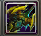
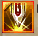
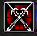
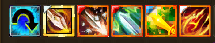
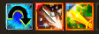
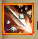
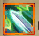
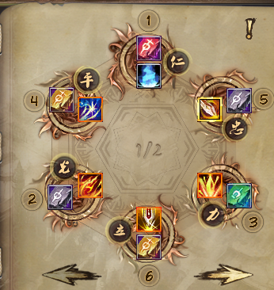
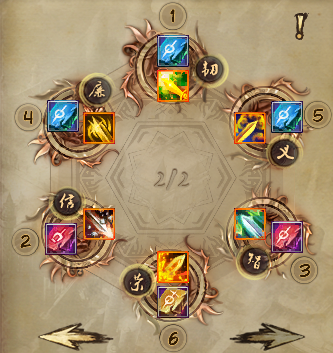
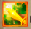

Дата написания гайда: 27.03.2025
Перед сражением баффаемся этими скиллами:
Когда льём босса, применяем последовательно:
Да, именно в такой последовательности.
Запал кидаем с ПЗ-пухой.
А затем - подменяем на основную. 
Затем баффаемся "Великим сиянием меча" для 85% пения. 
Затем используем последовательно:
В "Великий закалённый меч" - сапфировую руну, чтобы порезать физ. деф.
В "Великое невидимое лезвие" - золотую руну, чтобы шанс крита был 100%.
В "Пань Гу - Великий меч-ветрогон" - серебряную руну, чтобы была большая порезка ПЗ у босса.
В это же время используем на джинне яд и ярость  (у меня они стоят на Shift+F2 и Shift+F3 соответственно, можно переназначить их для удобства нажав на клавишу K и пролистав вниз до умений джиннов).
Также стоит учесть, что, если мы говорим о партийном ПвЕ, то не стоит кидать яд, если в пати есть син, потому что это перебьёт его отвод.
Макросов делаем несколько: один обычный, для общего применения (1):

Для маг. иммунов (2):
Для физ. иммунов (3):

Также замечу, что в стандартных бьющих скиллах:
, , можно менять тип урона с маг. на физ. и наоборот, если вставить рубиновую руну.А вот, как я расставил руны:


Можно поменять руны в "Великом мече огненного духа"  и "Великом мече костоломе" :
Тогда будет урон ещё выше по обычным мобам, но "Великий меч костолом" , но тогда не все скиллы в макросе (3) будут бить магией, что немного лишает универсальности.